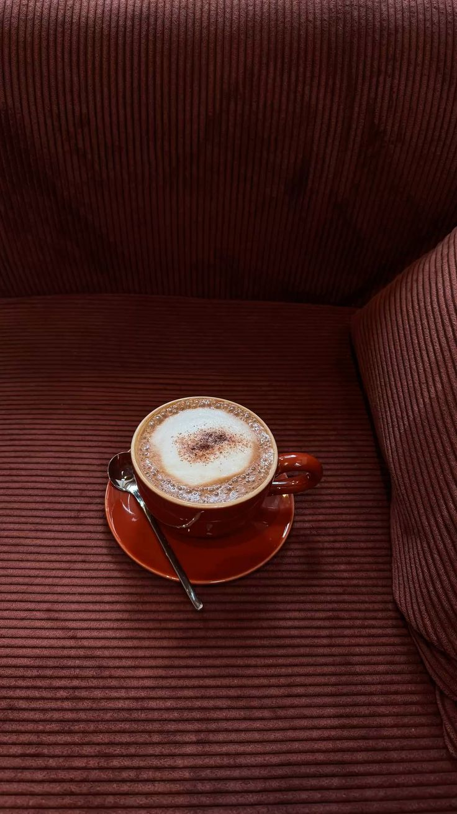
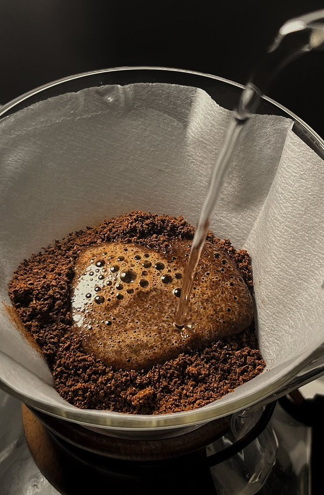
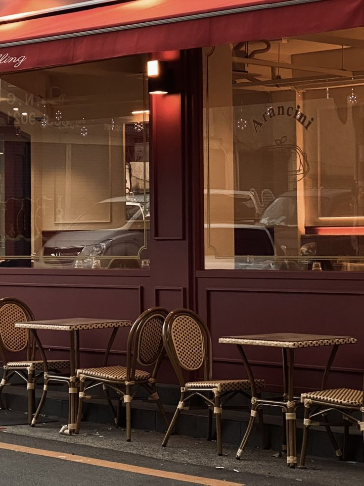

Lewati ke konten utama
Warkop Neng Widya
Beranda
Tentang Kami
Produk
Galeri
Kontak
Kontak Singkat
Galeri Warkop Neng Widya
Media Usaha

Suasana nikmat menyeduh kopi khas Warkop Neng Widya.

Proses penyeduhan kopi pilihan secara teliti.

Area kumpul santai bersama teman dan keluarga.
Suasana Warkop
Audio suasana santai Warkop Neng Widya.
Browser Anda tidak mendukung pemutar audio.